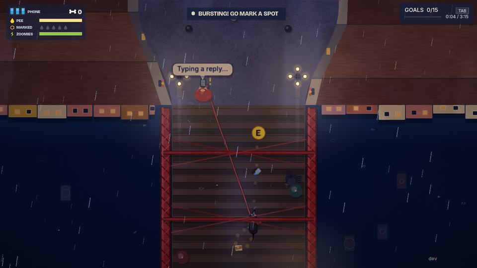

Girona
Onyar houses, steps and lioness
Girona in pouring rain at dusk: along the arcaded Rambla flagstones past a tempting bakery xuixo tray, out onto Eiffel's crimson iron Pont de les Peixateries Velles above the Onyar's hanging coloured houses, up the Barri Vell limestone steps as gargoyle spouts dump rain down the centre, and across Plaça de Sant Feliu where La Lleona clings to her column before running free in Jardins dels Alemanys.
- Off-leash stop
- JARDINS DELS ALEMANYS (Wooded clearing)
- Beat the clock
- Under 3:15
- Boss
- La Lleona
Screenshots



Goals (15)
- Mark 5 spots
- Have 4 good long sniffs
- Get the phone home without a scratch
- Get yourself home without a bump
- Get your business bagged
- Sniff 3 Onyar fronts
- Stay dry through the steps cascade
- Hide from the lioness's gaze 2 times
- Kiss the lioness behind
- Trip or drench the lioness
- Land an x3 trick combo
- Nab the xuixo off the bakery tray
- Spell LEASH
- Find the hidden pernil
- Beat the clock (under 3:15)